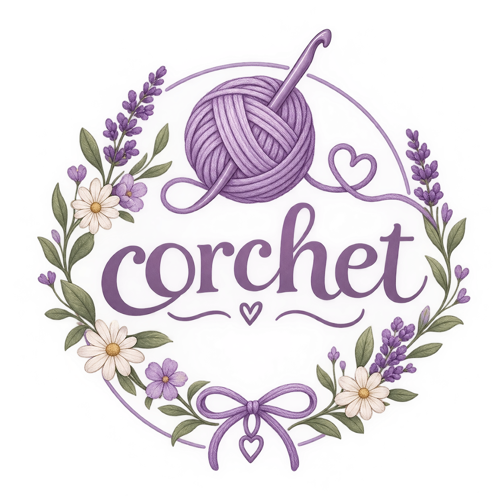

Corchet nasce dall'amore per l'uncinetto, i colori e tutte quelle piccole cose che rendono speciale il tempo trascorso creando con le proprie mani. Qui il filo diventa un punto di partenza per dare vita a nuove idee: piccoli accessori, decorazioni, progetti creativi e tante ispirazioni per chi ama il mondo del crochet. 🪡
Crediamo che lavorare all'uncinetto sia molto più che creare qualcosa di bello. È un modo per rallentare, rilassarsi e lasciare spazio alla propria fantasia, un punto dopo l'altro.🧠
Sul blog troverete tutorial, idee, consigli sui filati e progetti adatti sia a chi è alle prime armi sia a chi ha già esperienza con l'uncinetto. Perché ogni creazione può raccontare una storia, e ogni filo può diventare qualcosa di unico.
Prendi il tuo uncinetto, scegli il tuo colore preferito e... iniziamo a creare! 💜
Clicca mi piace! Ogni giorno nuove ispirazioni per i tuoi progetti corchet con materiali e tecniche differenti!
Ci lasciamo ispirare dai colori della natura, dai fiori, dalle piante e dalle delicate sfumature del lavanda!
Segui la nostra pagina Instagram per rimanere sempre aggiornati sui nuovi tutorial e tecniche raccontate dai nostri collaboratori!